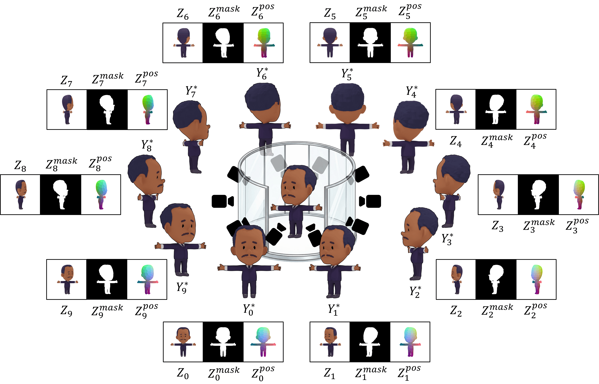

Method
Sample-wise vs. Data-level Alignment

(a) Prior sample-wise stylization networks optimize per-character, overfitting to the observed view. (b) Our approach trains a data-level prior on SPECSIA-15K, enabling generalization to novel views.
SPECSIA-15K Dataset
Paired dataset for 2D projection refinement in drawing-based animation.
- 1,498 3DBiCar characters
- 10 uniformly-sampled viewpoints/char
- 14,980 paired samples total
- Triplet input: (Z, Zmask, Zpos) + GT Y*
- 512 × 512 RGBA PNG
DraViE Pipeline
Plug-and-play 2D refinement module trained with data-level priors.
Dataset Construction

dataset.pngFor each character: render 10 views as artifact-free GT Y* → reconstruct 3D from frontal view → project to same viewpoints as artifact-prone Z. Each sample provides a triplet (Z, Zmask, Zpos) paired with Y*.
Pre-training with Patch-wise Objective

Patch centers are sampled from the foreground mask. Aligned 32×32 patches from the input triplet and Y* are used for patch-wise supervision. At inference, the fully convolutional network processes full-resolution frames directly.
DraViE Inference Pipeline

(a) Pre-training on SPECSIA-15K. (b) Optional lightweight adaptation to the input character. (c) Plug-and-play post-correction on novel-view projections from any upstream 3D animation system.